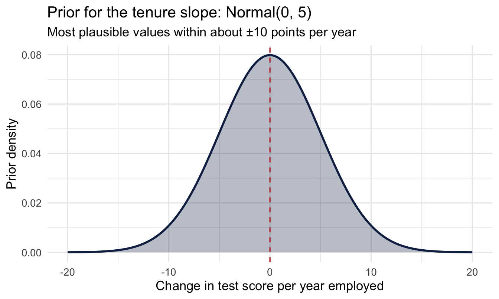
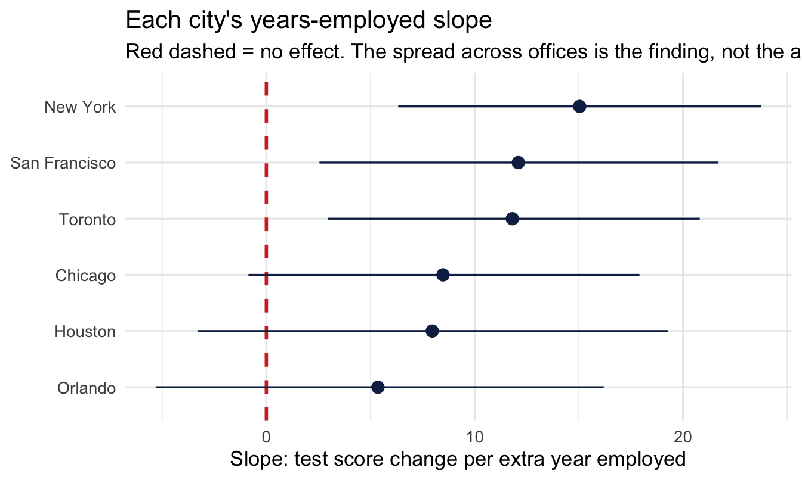
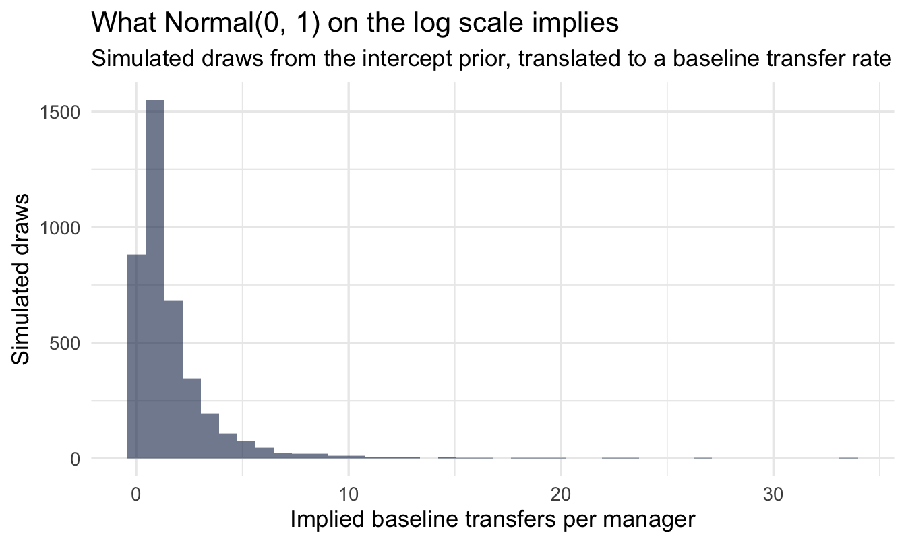
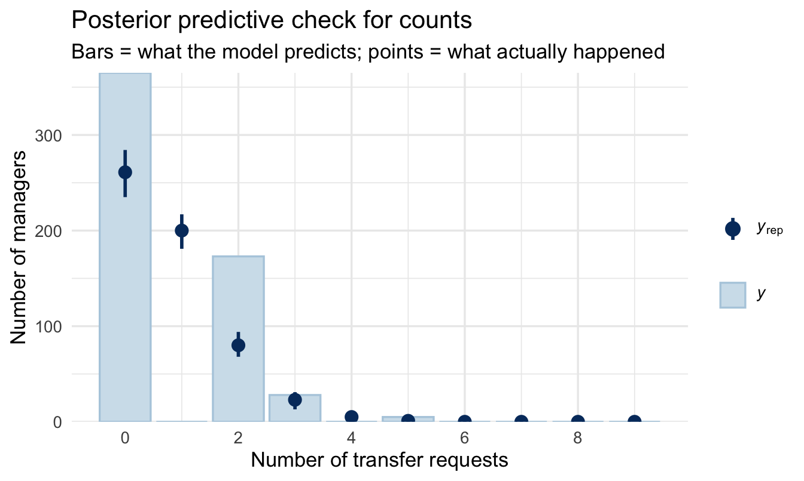

library(tidyverse)
library(peopleanalyticsdata)
library(brms)
library(tidybayes)
library(ggdist)
library(loo)
theme_set(theme_minimal(base_size = 13))
set.seed(2026)
data("managers", package = "peopleanalyticsdata")
# Guard against missing values before grouping and modelling (Chapter 1
# found gaps in a similar teaching dataset).
managers <- managers |>
drop_na(test_score, yrs_employed, city, transfers, group_size,
performance_group)12 Richer Models: When the Standard Recipe Runs Out
Optional deep-dive
Four extensions covering most of what real People Analytics work needs beyond the standard recipe: letting a relationship differ across groups (varying slopes), modelling counts properly, handling outcomes with several unordered categories, and dealing with data where observations belong to more than one kind of group at once.
Where each one shows up at work
These are easier to recognise from a situation than from a definition, so here are two of them — the other two are introduced where they arise.
“It worked. Well — it worked somewhere.” Your L&D team rolls out a new onboarding programme across every region and asks whether it improved time-to-productivity. You fit a model, find a small average effect, and report it. Six months later a regional director tells you it transformed her region and another says it changed nothing, and they are both right. The average was real and it described nobody.
That is the varying-slopes problem. It appears whenever you have an effect and more than one group: does the training work as well everywhere, does an extra year of tenure buy the same thing in every office, does the pay rise reduce attrition equally at every level? The honest answer is usually no, and a single number cannot say so. Where an effect differs is often more actionable than the effect itself — you cannot copy what the strong region did if your model has averaged it away.
“Nobody has minus two sick days.” Your HR director wants to know what drives absence. You have sick days per employee last year: mostly 0, 1 or 2, a few people at 15, nobody below zero and nobody at 3.5. Fit an ordinary regression and it will happily predict −0.4 days for some employees and 2.7 for others.
That is the count problem, and it covers a lot of HR data: sick days, transfer requests, applications per vacancy, grievances per site, support tickets per team, training courses completed. Anything you get by counting things that happened. These need a model that knows the answer must be a whole number and cannot be negative.
The chapter takes them in turn, using the managers dataset from Chapter 8 throughout — test scores and tenure for the first, transfer requests for the second, performance groups for the third.
What you’ll be able to do by the end
- Fit a varying-slopes multilevel model
- Interpret how an effect differs across groups
- Fit a Poisson regression for a count outcome
- Read coefficients as rate ratios and know when to reach for negative-binomial
- Recognise an outcome with several unordered categories, and know why its coefficients should never be presented
- Spot crossed grouping structure — the same person rated many times — and know what ignoring it costs you
12.1 Setup
12.2 Part 1 — Varying slopes
12.2.1 Where we left multilevel models
In Chapter 8 each city got its own intercept — its own average test score.
Note
That says offices start in different places. But it assumes any effect we add works identically everywhere.
12.2.2 The next question
Does the effect of years employed on test score differ from city to city?
Plausibly yes: tenure might sharpen test performance strongly in some offices (more mentoring, more internal knowledge-sharing) and barely matter in others.
Important
If that’s true, a single overall slope would average away the very thing you want to report.
12.2.3 The formula
test_score ~ yrs_employed + (1 | city) # Chapter 8
test_score ~ yrs_employed + (1 + yrs_employed | city) # today(1 + yrs_employed | city) gives each city its own intercept and its own slope.
12.2.4 Fit it
The intercept, sd, and sigma priors are the same ones from Chapter 8. The one genuinely new number is the slope prior — how many points of test score a year of tenure could plausibly move things:
tibble(b = seq(-20, 20, length.out = 400)) |>
mutate(density = dnorm(b, mean = 0, sd = 5)) |>
ggplot(aes(b, density)) +
geom_area(fill = "#122a52", alpha = 0.30) +
geom_line(colour = "#122a52", linewidth = 1) +
geom_vline(xintercept = 0, colour = "#d32f2f", linetype = "dashed") +
labs(title = "Prior for the tenure slope: Normal(0, 5)",
subtitle = "Most plausible values within about ±10 points per year",
x = "Change in test score per year employed", y = "Prior density")
fit_vs <- brm(
test_score ~ yrs_employed + (1 + yrs_employed | city),
data = managers, family = gaussian(),
prior = c(prior(normal(75, 15), class = Intercept),
prior(normal(0, 5), class = b),
prior(exponential(1), class = sd),
prior(exponential(0.5), class = sigma),
prior(lkj(2), class = cor)),
1 chains = 4, iter = 4000, seed = 11, refresh = 0
)
summary(fit_vs)- 1
-
Double the usual iterations. The correlation parameter introduced below is the hardest thing in this model to estimate, and at 2,000 it comes back with a warning-level
Rhat. Chapter 11’s rule applies: run longer rather than report it. ### Reading the output, line by line
Family: gaussian
Links: mu = identity
Formula: test_score ~ yrs_employed + (1 + yrs_employed | city)
Data: managers (Number of observations: 571)
Draws: 4 chains, each with iter = 4000; warmup = 2000; thin = 1;
total post-warmup draws = 8000
Multilevel Hyperparameters:
~city (Number of levels: 6)
Estimate Est.Error l-95% CI u-95% CI Rhat Bulk_ESS
sd(Intercept) 1.11 1.15 0.02 4.18 1.00 4833
sd(yrs_employed) 12.29 2.42 7.96 17.53 1.00 4457
cor(Intercept,yrs_employed) 0.09 0.45 -0.78 0.84 1.00 966
Tail_ESS
sd(Intercept) 3204
sd(yrs_employed) 4883
cor(Intercept,yrs_employed) 2186
Regression Coefficients:
Estimate Est.Error l-95% CI u-95% CI Rhat Bulk_ESS Tail_ESS
Intercept 180.93 20.23 141.24 220.20 1.00 11257 6087
yrs_employed -9.82 4.19 -17.92 -1.57 1.00 7333 4987
Further Distributional Parameters:
Estimate Est.Error l-95% CI u-95% CI Rhat Bulk_ESS Tail_ESS
sigma 77.57 2.21 73.38 82.06 1.00 9643 5526
Draws were sampled using sampling(NUTS). For each parameter, Bulk_ESS
and Tail_ESS are effective sample size measures, and Rhat is the potential
scale reduction factor on split chains (at convergence, Rhat = 1).This is the most crowded output in the book, and it is worth going through slowly. There are now three blocks instead of two, and the new one is at the top.
Regression Coefficients — the average city. Intercept is the expected test score for a manager with zero years of tenure, averaged across cities. yrs_employed is the average slope: what one more year of tenure does to the test score, on average across all six offices. Note the sign here — the average effect of tenure is negative, which is already worth a conversation. Hold that thought.
Multilevel Hyperparameters — how much cities differ. Three numbers, and each answers a different question:
sd(Intercept)— how much cities differ in their starting point. Around 1 point, with an interval that nearly touches zero. Cities start in essentially the same place.sd(yrs_employed)— how much cities differ in their slope. Around 12 points per year, with an interval nowhere near zero. Cities differ enormously in what tenure does.cor(Intercept, yrs_employed)— whether a city’s starting point and its slope are related to each other. This one gets its own section below.
Further Distributional Parameters. sigma, as always: how much individual managers differ from the model’s prediction for them.
Important
Put the average slope next to its variation and the finding is not the one the average suggests. The average tenure effect is about −10 points per year. The variation between cities is about 12.
A spread that large around an average that small means the effect is negative in some offices and positive in others. “Tenure slightly hurts test scores” is not the finding. “Tenure does completely different things in different offices, and we should ask why” is.
CautionTry it yourself
Before reading on: sd(Intercept) came out near zero and sd(yrs_employed) came out large. In plain words, what does that combination say about these six offices? Write one sentence you could say to an HR director, then compare it with the paragraph above.
NoteNobody reads this output fluently at first
Multilevel output is genuinely hard to read, and the difficulty is not a reflection on you. It is dense, the labels are terse, and the same word means different things in different blocks. Students struggle with it. So do people who teach it. I still slow down and check myself against the formula.
One practical suggestion, since it is available and it works: paste the summary() output into an LLM and ask it what each line means, then argue with the answer. Not because the machine knows better than the book — it will occasionally be confidently wrong — but because being told the same thing in different words is often the nudge that makes it land. Use it to get unstuck, then come back and check the explanation here agrees.
12.2.5 The correlation: what a city’s starting point tells you about its slope
The third hyperparameter is the one most likely to be skipped, and it is the most interesting idea in the chapter — partly because it cuts against how most of us were taught to think about regression. In a classical course, the intercept and the slope are two separate numbers you estimate and then move on from. Here they can be related across groups, and that relationship is itself a finding.
An example from my hospitality teaching makes it obvious. Imagine measuring the queue at a chain of coffee shops, first thing in the morning and again mid-afternoon:
- Popular cafés have a long morning queue — a high intercept — and the biggest drop by the afternoon: a steep slope.
- Quiet cafés have a short morning queue — a low intercept — and barely change all day: a flat slope.
Intercept and slope travel together. Knowing where a café starts tells you something about how much it will move. A model that estimated the two independently would be throwing that information away — and, more practically, would predict badly for a new café you have only seen once, in the morning.
The same shapes turn up constantly in People Analytics, and the sign of the correlation tells you which story you are in:
- Positive — offices that start high also improve fastest. The gap between your best and worst sites is widening on its own.
- Negative — offices that start low improve fastest, because they have the most room. The gap is closing, and some of what looks like a successful intervention may be nothing more than that.
Those are opposite conclusions with opposite consequences for where you put your money, and a varying-intercepts-only model cannot distinguish them.
Important
Now look at what our model actually says. The estimate is near zero and the interval runs from about −0.8 to +0.8 — which is very nearly the entire range a correlation can take. The data tells us essentially nothing about this parameter.
That is not a failure of the method, and it is worth reporting rather than quietly dropping. With six cities you have six intercepts and six slopes, and you are asking how two sets of six numbers move together. Chapter 8 said six groups is thin evidence about a spread; it is thinner still for a correlation. You would want dozens of groups before this number said anything, and it is the parameter you should be most reluctant to quote.
The lkj(2) prior in the model is what keeps this well-behaved. It says, before seeing data, that extreme correlations are less likely than mild ones — a gentle scepticism that stops the model chasing a ±1 correlation it cannot support from six points. Without it, this parameter would happily wander to the edges.
12.2.6 The number that answers the original question
Important
Under Multilevel Hyperparameters, sd(yrs_employed) is how much the tenure slope varies across cities. It is clearly above zero, so the relationship genuinely differs by office — and a single overall slope would have hidden that completely.
12.2.7 See the varying slopes
city_slopes <- coef(fit_vs)$city[, , "yrs_employed"] |>
as_tibble(rownames = "city")
city_slopes |>
ggplot(aes(x = Estimate, y = fct_reorder(city, Estimate))) +
geom_vline(xintercept = 0, linetype = "dashed",
colour = "#d32f2f", linewidth = 1) +
geom_pointrange(aes(xmin = Q2.5, xmax = Q97.5), colour = "#122a52") +
labs(title = "Each city's years-employed slope",
subtitle = "Red dashed = no effect. The spread across offices is the finding, not the average.",
x = "Slope: test score change per extra year employed", y = NULL)
12.2.8 Heterogeneity is a finding
Important
“Tenure predicts test performance strongly in some offices and barely at all in others” is a more useful finding than a single average slope near zero. An overall model would have reported “a modest effect” — and been misleading about where it actually shows up.
Your turn
Compare fit_vs to the varying-intercepts-only model from Chapter 8 using LOO. Does allowing slopes to vary improve prediction here?
# Your code here12.3 Part 2 — Count outcomes
12.3.1 A third kind of outcome
Counts are neither continuous nor yes/no: transfer requests per team, open reqs per recruiter, sick days per employee. These are non-negative whole numbers: 0, 1, 2, 3… and often mostly small.
12.3.2 Why ordinary regression fails
Important
- It can predict negative counts
- It can predict fractional counts (2.7 transfer requests)
- Counts are skewed with unequal spread — the Normal assumes neither
Using ordinary regression on counts is one of the most common avoidable mistakes in applied People Analytics work.
12.3.3 The Poisson model
A third kind of outcome, and — as ever — still just brm() with a formula and priors; only family = poisson() is new. Poisson works on the log scale, so — same habit as the log-odds prior back in Chapter 9 — translate before trusting it:
set.seed(112)
tibble(log_intercept = rnorm(4000, 0, 1)) |>
mutate(rate = exp(log_intercept)) |>
ggplot(aes(rate)) +
geom_histogram(bins = 40, fill = "#122a52", alpha = 0.6) +
labs(title = "What Normal(0, 1) on the log scale implies",
subtitle = "Simulated draws from the intercept prior, translated to a baseline transfer rate",
x = "Implied baseline transfers per manager", y = "Simulated draws")
Note
Centred on 1 transfer, comfortably covering anything from a fraction of one up to several — sensible for a rate we genuinely don’t know yet, and nowhere near ruling out either a quiet team or a high-churn one.
NoteWhy no
scale() this time?
Chapter 9 standardised its predictor so that normal(0, 1) on the log-odds scale meant something sensible. Here we have left yrs_employed and group_size in their raw units, and the reason is the same reason, pointing the other way.
Standardising is a device for making a prior interpretable when the raw unit is not. “One standard deviation of customer rating” is meaningless to a reader, but it was the only way to say “a plausible-sized change” for a variable whose scale we had no feel for.
Here the raw units are already the right size and already meaningful: one more year of tenure, one more direct report. A prior of normal(0, 0.5) on the log scale says one extra year multiplies the expected count by something between about 0.6 and 1.6 — a statement you can check against your own judgement in a way that “per standard deviation of tenure” is not.
The rule that falls out: standardise when the unit is arbitrary; keep the raw scale when the unit is something a person could picture. Your coefficients are easier to explain either way, and one fewer translation step is one fewer place to make a mistake.
fit_pois <- brm(
transfers ~ yrs_employed + group_size,
data = managers, family = poisson(),
prior = c(prior(normal(0, 1), class = Intercept),
prior(normal(0, 0.5), class = b)),
chains = 4, iter = 2000, seed = 112, refresh = 0
)
summary(fit_pois) Family: poisson
Links: mu = log
Formula: transfers ~ yrs_employed + group_size
Data: managers (Number of observations: 571)
Draws: 4 chains, each with iter = 2000; warmup = 1000; thin = 1;
total post-warmup draws = 4000
Regression Coefficients:
Estimate Est.Error l-95% CI u-95% CI Rhat Bulk_ESS Tail_ESS
Intercept -1.13 0.42 -1.96 -0.30 1.00 3822 3096
yrs_employed 0.00 0.09 -0.18 0.18 1.00 3317 2894
group_size 0.07 0.01 0.04 0.10 1.00 3358 3016
Draws were sampled using sampling(NUTS). For each parameter, Bulk_ESS
and Tail_ESS are effective sample size measures, and Rhat is the potential
scale reduction factor on split chains (at convergence, Rhat = 1).Two things to notice before interpreting anything.
There is no sigma. Just as with the Bernoulli model in Chapter 9, the Poisson has no separate spread parameter — the mean determines the variance completely. That is a convenience now and an assumption we come back to at the end of the chapter.
The coefficients are on the log scale, so they cannot be read directly. An estimate of 0.07 for group_size does not mean “0.07 more transfer requests per extra report”. As with the log-odds in Chapter 9, the number has to be translated before it means anything, which is the next step.
12.3.4 Interpret: rate ratios
fixef(fit_pois) |>
as_tibble(rownames = "term") |>
mutate(rate_ratio = exp(Estimate)) |>
select(term, Estimate, rate_ratio)# A tibble: 3 × 3
term Estimate rate_ratio
<chr> <dbl> <dbl>
1 Intercept -1.13 0.324
2 yrs_employed 0.00106 1.00
3 group_size 0.0733 1.08 Exponentiating turns each coefficient into a rate ratio — a multiplier rather than an addition. A rate ratio of 1.08 for group_size means each extra direct report multiplies the expected number of transfer requests by 1.08: an 8% increase per additional report, compounding as the team grows. A ratio of 1.0 means the predictor does nothing; below 1.0 means it reduces the count.
Multiplication rather than addition is the thing to hold on to. It is why a Poisson model can never predict a negative count: whatever you multiply a positive rate by, the answer stays positive.
Note
Chapter 15 revisits this exact variable, transfers, and shows why comparing raw counts across managers with very different group_size is misleading unless you account for it — there, as an offset defining a rate, rather than as an ordinary predictor as we have done here.
12.3.5 Does it fit?
pp_check(fit_pois, type = "bars", ndraws = 100) +
labs(title = "Posterior predictive check for counts",
subtitle = "Bars = what the model predicts; points = what actually happened",
x = "Number of transfer requests", y = "Number of managers")
Read it one bar at a time, left to right. Each position on the x-axis is a possible count — how many managers had 0 transfer requests, how many had 1, how many had 2. The bar and its interval are what the model expects; the point is what the data actually contains.
You want every point sitting inside its interval. Two failures are worth being able to recognise on sight:
- The point for zero sits above its bar. The data has more managers with no transfer requests than the model can account for. Real HR counts do this often, and it has a name — zero inflation — usually because two different processes are mixed together: managers who could have had a transfer request and didn’t, and managers for whom it was never a possibility at all.
- The points in the right-hand tail sit above their bars. The data has more high counts than the model expects. That is the failure the next section is about.
12.3.6 When Poisson isn’t enough
ImportantOverdispersion
The Poisson makes a strong assumption: the mean equals the variance. If managers average 2 transfer requests, Poisson insists the variance is also 2. Real counts are often overdispersed — more variable than that, because something the model hasn’t got hold of is pushing some teams high and others low.
You will see it in the posterior predictive check: the model under-covers the tails.
You can see the assumption directly, without any modelling at all:
managers |>
summarise(
mean_transfers = mean(transfers),
var_transfers = var(transfers),
1 ratio = var_transfers / mean_transfers
)- 1
- Poisson requires this ratio to be about 1. Meaningfully above 1 is overdispersion; the further above, the worse the fit will be.
mean_transfers var_transfers ratio
1 0.7968476 1.239358 1.555327The fix is one word in the family argument:
fit_nb <- brm(
transfers ~ yrs_employed + group_size,
data = managers, family = negbinomial(),
prior = c(prior(normal(0, 1), class = Intercept),
prior(normal(0, 0.5), class = b)),
chains = 4, iter = 2000, seed = 112, refresh = 0
)And the two are compared exactly as in Chapter 7:
loo_compare(loo(fit_pois), loo(fit_nb)) elpd_diff se_diff
fit_nb 0.0 0.0
fit_pois -44.6 8.7 Read the first column, elpd_diff. The better model sits on the top row with a difference of 0, and every other row shows how much worse it is, alongside the standard error of that difference. The rule of thumb: if the gap is more than about twice its standard error, the difference is real rather than noise.
Here it is not close. The negative binomial wins by around 45, with a standard error of about 9 — roughly five standard errors, which is about as decisive as this comparison gets. The variance-to-mean ratio warned us, and the model comparison confirms it: for this data, the Poisson was the wrong family.
12.3.7 So what happens to the answer?
This is the honest consequence, and it is worth following through rather than quietly moving on. We interpreted the Poisson rate ratios a few sections ago. Those came from a model we have now shown to be inadequate. Does the conclusion change?
bind_rows(
fixef(fit_pois)["group_size", ] |> as_tibble_row(),
fixef(fit_nb)["group_size", ] |> as_tibble_row()
) |>
mutate(
model = c("Poisson", "Negative binomial"),
1 rate_ratio = exp(Estimate),
lower = exp(Q2.5),
upper = exp(Q97.5)
) |>
select(model, rate_ratio, lower, upper)- 1
- Exponentiating the interval bounds as well, so the whole row is on the rate-ratio scale a reader can act on.
# A tibble: 2 × 4
model rate_ratio lower upper
<chr> <dbl> <dbl> <dbl>
1 Poisson 1.08 1.04 1.11
2 Negative binomial 1.08 1.04 1.14The point estimate barely moves. Both models agree that a bigger team means more transfer requests, and by roughly the same multiplier. What changes is the interval, which widens under the negative binomial.
That is exactly what overdispersion does, and it is why it matters. The Poisson did not get the effect wrong; it got the confidence wrong. It reported a narrower range than the data supports, because it was obliged to assume a variability it could see was too small.
Important
Which is the general shape of this kind of mistake, and worth carrying beyond this chapter. Choosing the wrong family will usually mislead you about precision before it misleads you about direction.
A model with the wrong family often still points the right way, which is precisely why the error survives review. Nobody notices a conclusion that is correct. They notice it much later, when the confident number turns out to have been less certain than advertised.
WarningWhen you can skip this
Checking for overdispersion costs one line — the variance-to-mean ratio above — and you should always spend that line. Fitting the second model is a different question.
Skip it when the ratio is close to 1. Poisson is doing its job and the negative binomial has nothing to add.
Skip it when you only need direction. If the finding is “bigger teams generate more transfer requests” and nobody is going to act on the exact multiplier, overdispersion will widen your intervals without changing the conclusion.
Don’t skip it when the interval is the point. Overdispersion makes Poisson intervals too narrow, so a model used to say “we expect between X and Y grievances next quarter” will sound more certain than it has any right to be. That is the case where the wrong family produces a confidently wrong number rather than a slightly imprecise one.
The negative-binomial adds a spare dispersion parameter, letting variance exceed the mean. Compare the two with LOO — if negbinomial wins clearly, you had overdispersion.
12.4 Part 3 — Outcomes with more than two categories
12.4.1 The gap in the toolkit
Chapter 9 handled a yes/no outcome. Chapter 18 handles an ordered one — a 1-to-5 rating, where the categories have a natural sequence. Between them sits a shape neither covers: an outcome with several categories that have no order at all.
People Analytics is full of them:
- Reason for leaving — better offer, relocation, management, retirement, dismissal.
- Next move — promoted, moved sideways, left, stayed put.
- Benefit election — plan A, plan B, plan C.
- Offer declined because — pay, location, timing, counter-offer.
“Better offer” is not more or less than “relocation”, so the ordinal machinery of Chapter 18 does not apply. And you cannot collapse them into yes/no without throwing away the thing you were asked about.
12.4.2 Priors need one extra step here
A multinomial model fits a separate equation for every category, so there is no single coefficient called b to put a prior on — there is one set per category. Ask brms what it expects:
- 1
-
Unordered labels, exactly as in Chapter 7 —
factor()says these are names, not numbers. - 2
-
default_prior()lists every parameter the model will have, and whatbrmswould use if you said nothing. Worth running on any unfamiliar model, not only this one: it is the fastest way to find out what you are being asked to have an opinion about.
prior class coef group resp dpar nlpar lb ub
(flat) b muMiddle
(flat) b yrs_employed muMiddle
student_t(3, 0, 2.5) Intercept muMiddle
(flat) b muTop
(flat) b yrs_employed muTop
student_t(3, 0, 2.5) Intercept muTop
tag source
default
(vectorized)
default
default
(vectorized)
defaultLook at the dpar column. Each row belongs to one category’s equation — mu followed by the category name. Rather than typing those names out, which depend on your data and are easy to get wrong, edit the table brms has just handed you:
mn_prior$prior[mn_prior$class == "b" & mn_prior$coef == ""] <-
1 "normal(0, 1)"
mn_prior$prior[mn_prior$class == "Intercept"] <- "normal(0, 2)"
fit_multi <- brm(
2 performance_group ~ yrs_employed,
data = managers, family = categorical(),
prior = mn_prior,
chains = 4, iter = 2000, seed = 12, refresh = 0
)
summary(fit_multi)- 1
-
One statement setting every category’s slopes at once. The
coef == ""condition picks the rows that stand for all coefficients in an equation rather than one named coefficient. - 2
- Does tenure predict which performance group a manager falls into?
Family: categorical
Links: muMiddle = logit; muTop = logit
Formula: performance_group ~ yrs_employed
Data: managers (Number of observations: 571)
Draws: 4 chains, each with iter = 2000; warmup = 1000; thin = 1;
total post-warmup draws = 4000
Regression Coefficients:
Estimate Est.Error l-95% CI u-95% CI Rhat Bulk_ESS
muMiddle_Intercept 4.06 0.98 2.14 5.99 1.00 2789
muTop_Intercept 5.10 1.25 2.55 7.59 1.00 2914
muMiddle_yrs_employed -0.64 0.21 -1.05 -0.24 1.00 2869
muTop_yrs_employed -1.26 0.27 -1.79 -0.71 1.00 2908
Tail_ESS
muMiddle_Intercept 2652
muTop_Intercept 2700
muMiddle_yrs_employed 2815
muTop_yrs_employed 2754
Draws were sampled using sampling(NUTS). For each parameter, Bulk_ESS
and Tail_ESS are effective sample size measures, and Rhat is the potential
scale reduction factor on split chains (at convergence, Rhat = 1).12.4.3 Reading it: one model per category, minus one
The output is longer than you might expect, and the reason is the whole idea of the model.
A multinomial model picks one category as the reference — the same device as the dummy variables in Chapter 7 — and then fits a separate set of coefficients for every other category, each describing that category against the reference. With three groups you get two sets; with five you get four.
So a coefficient here never means “the effect of tenure on performance group”. It means “the effect of tenure on the log-odds of being in this group rather than the reference group”. Change the reference and every number changes, while the model’s predictions stay identical.
Important
Which makes the coefficients close to unreadable, and points at the same answer Chapter 9 reached with odds ratios: do not present these numbers. Present predicted probabilities instead — for each level of your predictor, the probability of landing in each category. Those add up to 1, they need no reference group, and a stakeholder can read them directly.
add_epred_draws() handles this, returning one row per category per draw.
WarningWhen you can skip this
Skip it when one category is the question. If leadership only cares about who left for a better offer, a yes/no model for that single category is simpler, easier to explain, and answers what was asked.
Skip it when the categories really are ordered. Chapter 18’s proportional-odds model uses that order and gets more out of the same data. Multinomial throws the ordering away.
Don’t skip it when the categories compete. The reason multinomial exists is that the probabilities must sum to 1 — if more people leave for pay, fewer leave for everything else, by arithmetic. Fitting four separate yes/no models ignores that constraint and can produce probabilities that add to more than 1, which is difficult to defend in a room.
12.5 Part 4 — When observations come in more than one kind of group
12.5.1 The structure Chapter 8 did not cover
Every multilevel model so far has had one grouping factor: managers within cities, employees within offices. Each row belonged to exactly one group, and the groups nested neatly.
A lot of People Analytics data does not look like that:
- Pulse surveys — one row per employee per wave. Rows group by employee and by wave, and neither is inside the other.
- 360 feedback — one row per rating. Rows group by ratee and by rater.
- Training evaluation — one row per person per course. Rows group by participant and by course.
These are crossed rather than nested: an employee appears in every wave, and every wave contains every employee. Chapter 8’s (1 | city) assumes each row sits in one place in one hierarchy, and that assumption is simply false here.
12.5.2 The formula, and why ignoring it is dangerous
The fix is smaller than the problem sounds — add a second term:
# One row per participant per course
rating ~ course_length + (1 | participant) + (1 | course)Each participant gets their own intercept, each course gets its own, and the model separates the two.
Important
The reason this matters is not precision, it is honesty about how much data you have.
Five hundred ratings from fifty participants is not five hundred independent pieces of evidence. Some people rate everything highly and some rate everything harshly, so their ten ratings are ten variations on one opinion. Ignore the participant grouping and the model counts them all as independent, and reports an interval far narrower than the evidence supports.
This is the same failure as Chapter 8’s league table, arriving from a different direction: treating repeated measurements of the same thing as though they were measurements of different things.
The learning dataset in peopleanalyticsdata — 4,974 feedback responses from 326 participants across a range of programmes — is built for exactly this and makes a good exercise. Chapter 19 then adds the other half of the problem: those ratings are measured with error too.
Your turn
Refit the count model with family = negbinomial() and compare it to the Poisson version with LOO. Is there evidence of overdispersion?
# Your code hereOn the job
ImportantWhy this matters day to day
Two common situations live here. If an effect plausibly differs across your groups (offices, functions, cohorts), varying slopes let you estimate and report that variation instead of averaging it away — often the more actionable finding. If your outcome is a count, Poisson or negative-binomial regression is the correct tool — using ordinary regression on counts is a common and avoidable mistake.
Summary
NoteToday you learned
(1 + x | group)lets both intercept and slope vary by group.sd(x)at the group level measures how much the effect varies — itself a finding.- Poisson regression (
family = poisson()) models counts; interpretexp(coef)as rate ratios. - Overdispersed counts call for negative-binomial.
Next chapter
Model building as craft: the decisions software won’t make for you — that completes the technical toolkit, and the next chapter is about everything the toolkit does not decide for you. Which variables can be changed by anybody in your organisation, what shape a relationship should take, whether one effect depends on another, and what you would do differently depending on the answer. None of it produces an error message, and all of it changes what the model means.
Part V then turns to problems built specifically for the People Analytics community: empirical Bayes, Bayesian shrinkage for ranking managers and teams fairly, hierarchical models for pay and variance, survival analysis for the employee lifecycle, Likert and survey data, measurement error, Bayesian A/B testing, causal inference, and a closing chapter on building priors with your stakeholders.